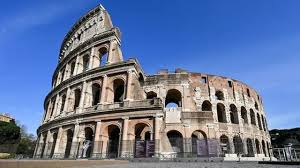
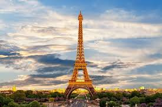
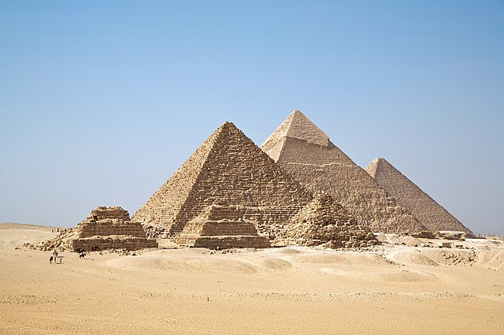
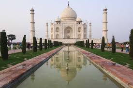

여러나라의 랜드마크를 같이 알아 보도록 하자.
1.자유의 여신상

자유의 여신상(自由의 女神像, 문화어: 자유의 여신상, 영어: Statue of Liberty 스태추 오브 리버티,
프랑스어: Statue de la Liberté 스타튀 드 라 리베르테)은 미국 뉴욕 리버티섬에 있는 건축물로,
뉴욕을 상징하는 대표적인 건축물이며, 세계를 밝히는 자유
(영어: Liberty Enlightening the World 리버티 인라이트닝 더 월드,
프랑스어: La liberté éclairant le monde 라 리베르테 에클레랑 르 몽드)라는 이름으로,
프랑스가 19세기 말에 미국의 독립 100주년을 축하하기 위해 제작한 동상이다.
2.콜로세움

콜로세움(Colosseum, 이탈리아어: Colosseo 콜로세오)은 고대 로마 시대의 건축물 가운데
하나로 로마 제국 시대에 만들어진 타원형 경기장이다. 석회암, 응회암, 콘크리트, 홍예석 등으로
지어져 있고, 5만 명 이상의 관중을 수용할 수 있었다. 로마의 중심지에 위치하여 있고,
현재는 로마를 대표하는 유명한 관광지로 탈바꿈하였다. 콜로세움이라는
이름은 근처에 있었던 네로 황제의 거대 동상인 콜로서스(巨像:colossus)에서 유래한다.
원래 이름은 플라비우스 원형 경기장으로, 서기 72년 베스파시아누스 황제가
착공해 8년 뒤에 아들인 티투스 황제가 완공했다.
3.에펠탑

에펠탑(프랑스어: Tour Eiffel, [tuʁ ɛfɛl], 영어: Eiffel Tower)은 프랑스 파리 마르스 광장에 위치한
격자형 철골 타워이다. 1889년에 프랑스 혁명 100주년을 맞이하여 파리 만국 박람회를
개최하였는데 이 박람회를 상징할만한 기념물로 에펠탑을 건축하였다. 에펠탑은
박람회가 열린 마르스 광장 출입 관문에 위치해있다. 프랑스의 대표 건축물인 에펠탑은
격자 구조로 이루어져 파리에서 가장 높은 건축물이며, 매년 수백만 명이 방문할 정도로
파리에서 빼놓을 수 없는 세계적으로 유명한 관광명소이다. 이 탑은 공모전을 통해 선정된
프랑스 공학자 '귀스타브 에펠'의 작품으로 이를 디자인한 그의 이름을 따서 명명했다.
4.만리장성

만리장성(중국어 정체자: 萬里長城, 간체자: 万里长城, 병음: Wànlĭ Chángchéng 완리창청,
영어: Great Wall of China)은 흉노족 등의 유목 민족의 침입을 막기 위해 중국의
고대 진나라(시황제) 때 기존의 성곽을 잇고 부족한 부분은 새롭게 축조하여 만든
거대한 성곽이다. 이후 명나라 시대에 이르기까지 중국의 역대 왕조에서 다양한 목적을 가지고
방벽을 지속적으로 보수하고 개축 및 신축하여 현재까지 남아 있으며 중국을 상징하는
대표적인 유적이자 건축물로 널리 알려져 있다. 1987년에 유네스코의 세계문화유산에 등재되었다.
5.피라미드

피라미드(pyramid)는 일반적으로 정사각뿔 꼴의 고대 유적을 가리킨다. 피라미드의 어원은
고대 그리스어 피라미스인데, 이집트인은 “메그드락”라고 불렀다고 한다. 한때 이집트의
피라미드가 무덤이 아니라는 설도 있었으나, 대체로 국왕, 왕비 등 왕족의
무덤으로 쓰였을 것이라는 설이 가장 유력하다. 왕의 피라미드에서 미라가 여럿 발굴되었을 뿐
아니라 미라가 안치되었던 방에서 매장에 필요한 석관, 항아리, 황금 제품 등이 출토되었고,
부조나 비문 등에서 제사에 쓰였던 글이 발견되었기 때문이다.
6.타지마할

타지마할(힌디어: ताज महल, 우르두어: تاج محل, 페르시아어: تاج محل)은 인도 아그라에 위치한 무굴 제국의
대표적 건축물이다. 무굴 제국의 황제 샤 자한이 자신의 총애하였던 부인 뭄타즈 마할로 알려진
아르주망 바누 베굼을 기리기 위하여 1632년에 무덤 건축을 명하여 2만여 명이 넘는 노동자를
동원하여 건설하였다. 건축의 총 책임자는 '우스타드 아마드 로하리'로 알려져 있고,
뭄타즈 마할이 죽은지 6개월 후부터 건설을 시작하여 완공에 22년이 걸렸다.
이상 여러나라들의 랜드마크 설명을 끝내도록 하겠다.